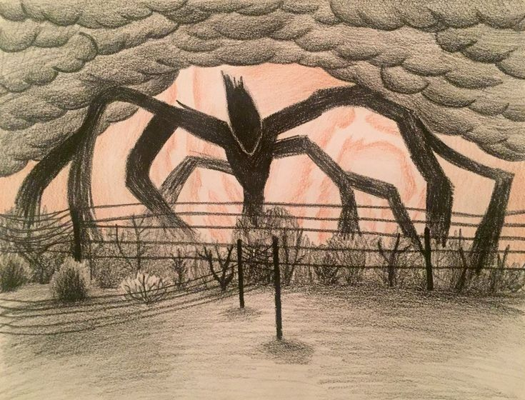

Breve descrição do Devorador de Mentes
O Devorador de Mentes é uma entidade cósmica poderosa e assustadora feita de partículas de sombra. Seus principais poderes giram em torno da dominação e do controle mental absoluto.
“Ele não domina apenas os corpos. Ele domina as pessoas.”

Principais poderes do Devoreador de Mentes
-
Controle mental absoluto
O Devorador de Mentes pode assumir o controle da mente de qualquer ser vivo, manipulando suas ações e pensamentos.
-
Manipulação de memórias
Ele pode alterar, apagar ou implantar memórias falsas, tornando suas vítimas vulneráveis à sua influência.
-
Mente colmeia
Ele pode manter um exército de Demogorgons e outros monstros, usando a mente das pessoas controladas.
-
Uso do corpo dos devorados
O Devorador de Mentes pode usar o corpo de suas vítimas como uma extensão de seu próprio poder.